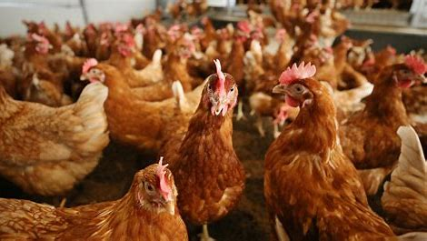

Bird flu
About

Bird flu is also known as avian flu or avian influenza.It is a disease that originated in China back in 1996.
This disease was initially detected among geese and was proven to be contagious and fatal.
It is an acute,infectious and viral disease that seemed to affect migrant and aquatic birds more than others,
but it appeared to be affecting livestock as well.This disease can last for several days or weeks.
It can be transmittable through direct contact.Some of its variants can be dangerous or life threatening.